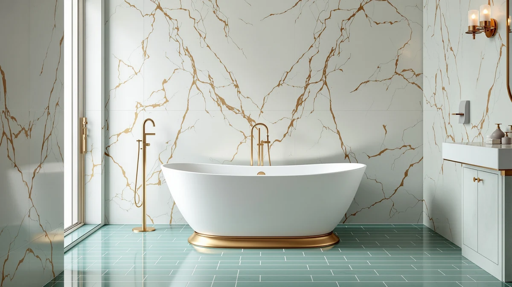

Freestanding Tub Floor Support & Weight Guide (2026): Do You Need Reinforcement?
Prices and picks verified as of August 2026. Independent, reader-supported reviews.


Things to Know Before You Buy
- A filled freestanding tub commonly weighs 400 to 800 pounds once you add water and a bather, and that load lands on a footprint far smaller than a built-in tub.
- Most first-floor bathrooms over a concrete slab carry a filled tub without modification. Upper-floor installs are where joist spacing and span start to matter.
- A local structural engineer or contractor can check your joist span in under an hour, and that visit is cheap compared to a cracked ceiling below.
- Acrylic and fiberglass tubs weigh less empty than cast iron or stone resin, which matters most when you can't reinforce the floor before installation.
- Building codes typically require 40 pounds per square foot of live load in a residential bathroom, and a filled soaking tub can exceed that over its footprint.
Freestanding tub floor support weight is the first thing to check before you order a soaking tub, because a gorgeous tub that overloads your subfloor turns into a costly repair. A standard 60-inch freestanding tub filled with water and one bather can weigh 400 to 800 pounds, concentrated on four small feet instead of spread across a long built-in base. That concentration is exactly why floor support deserves attention before installation, not after.
Most ground-floor bathrooms sitting on a concrete slab handle a filled tub without any extra work. The calculation changes once you move to a second story or an older home with wider joist spacing, where the floor was framed decades before soaking tubs became popular. In those cases, a quick check of your joist span and spacing tells you whether you need reinforcement, a lighter tub, or nothing at all.
This guide walks through how filled tub weight compares to your floor's load capacity, which tub types are lighter by design, and the mistakes that lead to sagging floors or cracked ceilings below. We compare specs and codes rather than run our own structural tests, so treat the numbers here as a starting point and confirm anything borderline with a licensed contractor or structural engineer before you install.
What You Need to Know
Freestanding tub floor support weight comes down to two numbers: how much your tub weighs when full, and how much load your floor can carry per square foot. Residential building codes generally require bathroom floors to support 40 pounds per square foot of live load, on top of the floor's own dead load. A 60-inch acrylic tub filled with 80 gallons of water and a 180-pound bather easily crosses 600 pounds, and that weight sits on a footprint of roughly 6 to 8 square feet instead of spreading across the whole room.
Concrete slab foundations rarely have an issue with this math. Wood-framed floors, especially on upper stories, depend on joist size, spacing, and span to carry that concentrated load safely. A floor built with 2x8 joists spaced 16 inches apart and spanning 12 feet handles less weight than one built with 2x10 joists on the same spacing, and older homes often used lighter framing than current code allows.
Cast iron and stone resin tubs add another 250 to 500 pounds of empty weight before you add a drop of water, which raises the total load well past what a lightweight acrylic tub would place on the same spot. Owners planning an upper-floor install with a heavy tub should get the joists checked first. Reviewers who have gone through this process consistently note that a short conversation with a contractor beats guessing, because sistering a joist or adding blocking after the fact costs far more than confirming capacity before delivery.
Types and Categories
Tub material drives most of the difference in freestanding tub floor support weight, and the four common categories sit at noticeably different points on that scale. Acrylic tubs, reinforced with fiberglass behind the shell, typically weigh 70 to 130 pounds empty. That makes them the lightest common option and the easiest to justify on a second-floor bathroom without any structural work.
Fiberglass-only tubs land in a similar range to acrylic, though they tend to flex more over time and show wear sooner. Solid surface and stone resin tubs, built to mimic the look of natural stone, weigh considerably more, often 150 to 300 pounds empty, and their weight distribution across a wider base can help offset some of that load. Cast iron tubs, the heaviest common category, run 250 to 500 pounds before water enters the picture, and their weight sits on a small footprint that concentrates load directly onto whatever framing is underneath.
Copper and stone tubs occupy the upper end of the range, with some models exceeding 400 pounds empty and requiring dedicated structural planning even on a ground floor. When you're comparing tub types for an upper-story bathroom, an acrylic or fiberglass shell gives you the most room between your floor's capacity and the tub's filled weight, which is exactly the buffer you want if your joist spacing turns out to be tighter than expected.
How to Choose
Start by identifying which floor your bathroom sits on. A ground-floor installation over a concrete slab rarely needs a freestanding tub floor support weight calculation at all, since the slab carries far more than any filled tub demands. An upper-floor bathroom over wood framing is where the work begins, and the first step is finding your joist size, spacing, and span, either from a builder's plan or by measuring in an accessible spot like a basement ceiling or crawl space.
Once you know the framing, compare it against a span table for your region's building code, or hand the numbers to a structural engineer for a direct capacity estimate. A quick visit runs a few hundred dollars in most markets and gives you a clear yes-or-no answer instead of a guess. If the floor falls short, you have three practical paths: choose a lighter tub material, add blocking or sister joists to increase capacity, or relocate the tub over a load-bearing wall where the floor is naturally stronger.
Weigh the tub against your bather count and typical water volume, since the manufacturer's empty weight tells only part of the story. A 72-inch tub built for two people holds more water and carries more combined body weight than a 60-inch single-bather model, and that difference adds up fast when you're near your floor's limit. Buyers renovating an older home should also factor in the age of the framing, since decades of moisture exposure near plumbing can quietly reduce a joist's real capacity below its original rating. When the math is close, choose the lighter tub or reinforce the floor instead of assuming the numbers will work out.
Common Mistakes to Avoid
Buyers frequently check only the tub's empty weight listed on the product page and skip the filled weight entirely. That number can undersell the real freestanding tub floor support weight by 400 pounds or more once water and a bather enter the equation, so treat the empty weight as a starting point rather than the figure that matters for your floor.
A second common error is assuming a ground-floor bathroom is automatically safe. Older homes with crawl spaces or raised wood foundations don't always sit on a slab, and a first-floor bathroom in that kind of house still depends on joist framing underneath. Confirm what's actually below the floor before you skip the structural check.
Homeowners also tend to underestimate how concentrated the load becomes on a small-footprint tub. A built-in tub spreads its weight across a long apron and multiple support points, while a freestanding tub rests on four feet or a narrow base, which means the same total weight presses harder on a smaller section of floor. Ignoring that concentration is how a floor that looks fine on paper ends up sagging in practice.
Finally, installers sometimes skip a level check during setup and assume the tub will settle evenly on its own. An unlevel tub shifts weight unevenly onto its feet, which stresses one section of framing more than the rest and can accelerate wear at exactly the spot least equipped to handle it.
Care and Maintenance
Freestanding tub floor support weight is worth rechecking every so often, since conditions on your floor change over time. Wood framing changes over years of exposure to moisture, especially near plumbing connections, and a joist that met code when you installed the tub can lose capacity as it ages. Walk your bathroom floor once or twice a year and note any new bounce, soft spots, or gaps between the tub base and the surrounding tile.
Watch the ceiling below the tub as closely as the floor itself. A sagging ceiling line, a new crack near the light fixture, or a soft patch of drywall often shows up before the floor above gives any visible sign of trouble. Owners who catch these early signals typically face a simple repair, while those who wait risk a much larger structural fix.
Keep an eye on the caulk and seal around the tub base too. Water that seeps past a failed seal soaks into the subfloor over months, weakening the wood exactly where it carries the most concentrated weight. Reseal at the first sign of cracking or gaps, and address any slow leak from the drain or overflow assembly right away rather than letting it sit. A dry, well-supported subfloor is what keeps your original weight calculation accurate for the life of the tub.
Our Top Picks
If your floor check comes back clear, these three acrylic freestanding tubs keep the empty-weight side of the equation as light as possible, which leaves you more room before you approach your floor's limit.

Editor’s Pick
ANZZI 55 Inch Acrylic Freestanding
A 55-inch acrylic shell that keeps empty weight low, a solid choice when you need to stay well under your floor's rated capacity.
$539.10
Check Price on Amazon
Best Value
FerdY Tahiti 55" Acrylic Freestanding
FerdY's double-wall acrylic construction spreads filled weight evenly across the base, useful if your joist spacing is on the tighter side.
$999.99
Check Price on Amazon
Premium Choice
59 Inch Acrylic Freestanding Bathtub
A 59-inch acrylic tub with a mid-range empty weight, worth confirming against your joist span before you order the larger footprint.
$694.83
Check Price on AmazonFrequently Asked Questions
How much weight can a normal floor support for a freestanding tub?
Residential codes generally require bathroom floors to carry at least 40 pounds per square foot of live load. A filled freestanding tub often concentrates 400 to 800 pounds onto a footprint of 6 to 8 square feet, which is why joist size and spacing matter more than the raw code number.
Do I need a structural engineer before installing a freestanding tub upstairs?
Not always. Ground-floor bathrooms over a concrete slab rarely need one. An upper-floor install, especially in an older home or with a heavy cast iron or stone tub, is where a structural engineer's opinion is worth the cost of the visit.
How much does floor reinforcement for a bathtub typically cost?
Sistering joists or adding blocking under a bathroom floor generally runs a few hundred to a couple thousand dollars, depending on access and the extent of the work. That's a modest cost compared to repairing a sagging or collapsed section of floor after the fact.
Are acrylic tubs lighter than cast iron tubs?
Yes, by a wide margin. Acrylic tubs typically weigh 70 to 130 pounds empty, while cast iron tubs run 250 to 500 pounds empty. That gap matters most on upper floors, where every pound of empty weight eats into your available floor capacity.
Can an old house support a modern freestanding soaking tub?
Often yes, but it depends on the original framing and how it has held up over time. Older homes sometimes used narrower joist spacing than current code allows, which can work in your favor, but decades of moisture near plumbing can also reduce a joist's real capacity. A quick inspection settles the question either way.
Verdict
Freestanding tub floor support weight is a math problem, not a guessing game, and it takes one afternoon to solve. Find your joist size, spacing, and span, compare that against the filled weight of the tub you want, and get a professional opinion when the numbers land close together. Ground-floor bathrooms over a slab rarely need to worry. Upper-floor installs, older homes, and heavy materials like cast iron are where the check earns its keep.
If you'd rather sidestep the question entirely, an acrylic tub like the ANZZI model above keeps empty weight low and gives you the widest margin under most floor capacities. Confirm your specific numbers before you buy, but for the majority of standard residential bathrooms, a lightweight acrylic freestanding tub and a quick joist check are all it takes.